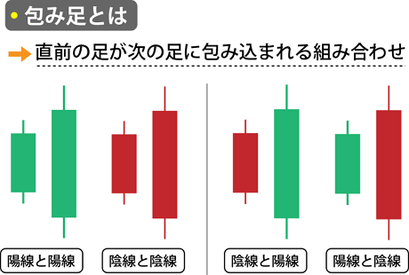
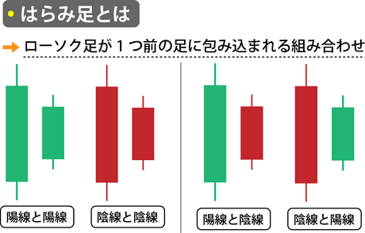

FXにおける「包み足」と「はらみ足」
FXで継続的に利益を上げるためには、為替の値動きをグラフ化した「チャート」について理解を深めておく必要があります。
代表的なものの1つが「包み足」と「はらみ足」で、相場が反転する可能性が高いときに出現するパターンで売買のサインとして活用できます。
👈参考ページ 【松井証券】
👈参考ページ 【OANDA証券】
包み足とは

包み足は2本のローソク足で構成され、2本目のローソク足が1本目の実体を完全に覆っているパターンです。
「アウトサイドバー」とも呼ばれ、相場の転換を示唆する重要な指標です。
- 強気の包み足：下降トレンドの底で出現し、上昇トレンドの始まりを示唆。1本目が陰線、2本目が陽線で、2本目が1本目の高値と安値を超える。
- 弱気の包み足：上昇トレンドの天井で出現し、下降トレンドの始まりを示唆。1本目が陽線、2本目が陰線で、2本目が1本目を包み込む形状。
はらみ足とは

はらみ足も2本のローソク足で構成されますが、1本目のローソク足の高値と安値の中に2本目が収まる状態です。
「インサイドバー」とも呼ばれ、トレンド転換の可能性を示唆します。
- 陽のはらみ足：高値圏で発生した場合、買いの勢いが落ち着き下降トレンドへの転換を示唆。
- 陰のはらみ足：安値圏で発生した場合、売り圧力が落ち着き上昇トレンドへの転換を示唆。
注意：包み足よりも転換のサインが弱く、トレンド継続の可能性もあります。
包み足・はらみ足を使った取引方法
- 高値圏で包み足：売りエントリーのタイミング。2本目のローソク足の高値を損切りポイントに。
- 安値圏で包み足：買いエントリーのタイミング。2本目のローソク足の安値を損切りポイントに。
- 高値圏ではらみ足：転換確認後、売りエントリーが安全。
- 安値圏ではらみ足：上昇トレンド転換確認後、買いエントリーが安全。
包み足を活用する際の注意点
- 「だまし」に注意：予測と逆の値動きに備え、他の分析指標と併用しましょう。
- 他の分析指標で確認：移動平均線 や MACD、RSI などと組み合わせて精度を高める。
- 長期足での包み足に注目：長期足で形成された包み足の信頼性が高い。
- 長期トレンドと同じ方向でのブレイクアウト時のみエントリー：逆方向のブレイクアウトは一時的な調整の可能性あり。
- レンジ相場ではエントリーを控える：方向性がない場合、包み足の信頼性が低くなります。
包み足はトレンド転換のシグナル、はらみ足は転換の可能性を示唆します。慎重に他のテクニカル分析を併用してトレードに役立てましょう。